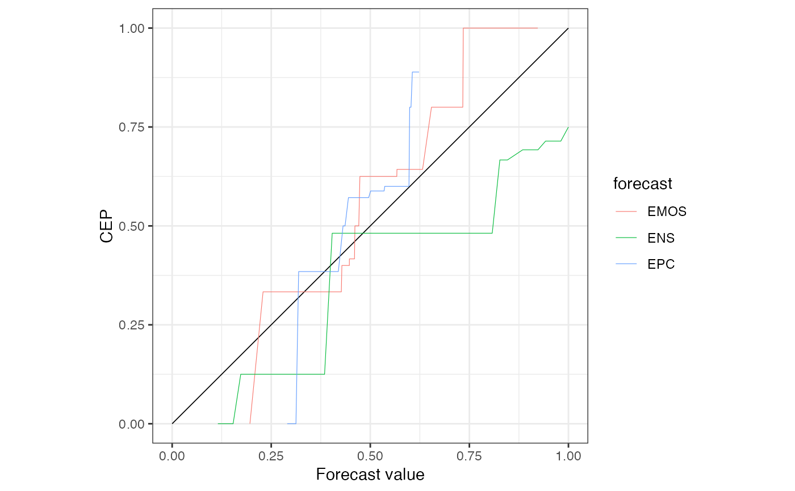
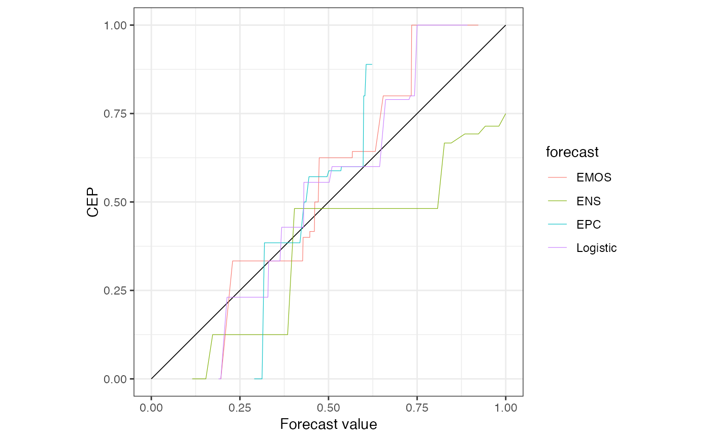

Combine two or more 'reliabilitydiag' objects that are based on the
same observations. Other objects are coerced by as.reliabilitydiag
before combination.
objects to be concatenated.
accuracy when comparing y in 'reliabilitydiag'
objects.
a string specifying whether the prediction values should be
treated as "continuous" or "discrete".
a numeric vector of possible prediction values;
values in x are rounded to the nearest value in xvalues and
xtype is set to "discrete".
a value in (0, 1) specifying the level at which consistency or confidence regions are calculated.
a string specifying whether "resampling",
"continuous_asymptotics", or "discrete_asymptotics" are used
to calculate consistency/confidence regions.
a string specifying whether consistency regions
around the "diagonal" or confidence regions around the
"estimate" are calculated.
the number of bootstrap samples when
region.method == "resampling".
an object inheriting from the class 'reliabilitydiag'.
data("precip_Niamey_2016", package = "reliabilitydiag")
X <- precip_Niamey_2016[c("EMOS", "ENS")]
Y <- precip_Niamey_2016$obs
r0 <- reliabilitydiag0(Y)
r1 <- c(r0, X, EPC = precip_Niamey_2016$EPC, region.level = NA)
r1

#> 'brier' score decomposition (see also ?summary.reliabilitydiag)
#> # A tibble: 3 × 5
#> forecast mean_score miscalibration discrimination uncertainty
#> <chr> <dbl> <dbl> <dbl> <dbl>
#> 1 EMOS 0.232 0.0183 0.0305 0.244
#> 2 ENS 0.266 0.0661 0.0441 0.244
#> 3 EPC 0.234 0.0223 0.0323 0.244
c(r1, reliabilitydiag(Logistic = precip_Niamey_2016$Logistic, y = Y))

#> 'brier' score decomposition (see also ?summary.reliabilitydiag)
#> # A tibble: 4 × 5
#> forecast mean_score miscalibration discrimination uncertainty
#> <chr> <dbl> <dbl> <dbl> <dbl>
#> 1 EMOS 0.232 0.0183 0.0305 0.244
#> 2 ENS 0.266 0.0661 0.0441 0.244
#> 3 EPC 0.234 0.0223 0.0323 0.244
#> 4 Logistic 0.206 0.0171 0.0555 0.244